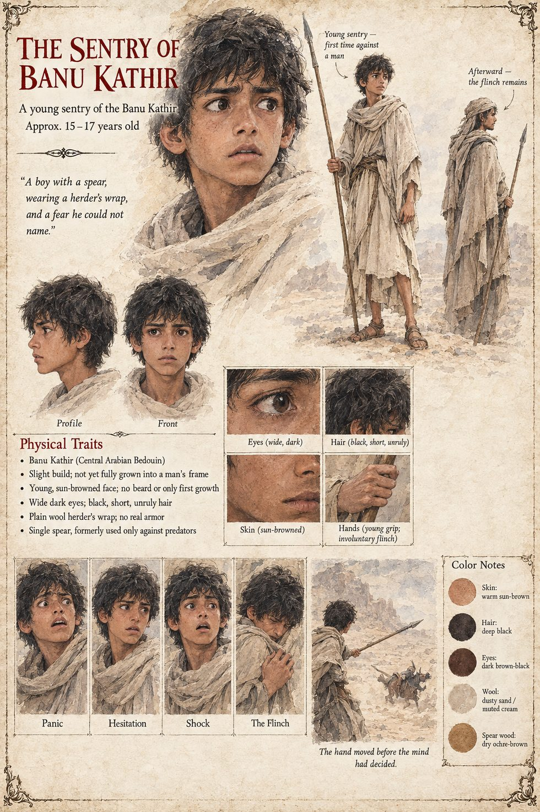

The Sentry of Banu Kathir
A young sentry of the Banu Kathir · unnamed · kills the first man of the war · fifteen to seventeen by the sheet
A Banu Kathir sentry half the age of the rider he kills, who has never before held a spear against a man instead of a jackal. The rider, young himself and sent by the Banu Harith to demand that the Banu Kathir elders formally ratify a judgment already begun without them, is the first death of the war, not Malik's, though every man on both sides would have told you in the war's later months that it should have been, and he is killed not by design but by panic. The sentry will spend the rest of a long life, which the desert, the manuscript notes, spared him, unable to explain fully, even to himself, why his hand did what it did a full second before his mind had finished deciding whether it should.
That single death demands, by the same honor-arithmetic that demanded Malik's seizure, a response in kind. The Banu Harith raid a Banu Kathir well three nights later expressly to collect it, killing two herdsmen, one of them a boy named Salim who had only that season taken over his father's watch, neither of whom had any more to do with the sentry's panic than Malik had to do with Amina's murder. Within the week the Banu Kathir burn a season's stored grain belonging to a Banu Harith family that had taken no side. By the fourth such exchange men on both sides can no longer say which grievance a given raid is answering.
The sheet draws a slight boy not yet grown into a man's frame, with a young sun-browned face and at most a first growth of beard, wide dark eyes and short, unruly black hair, in a plain dusty-sand wool herder's wrap with no real armor, holding a single ochre-brown spear he has used only against predators. Two full-length views are captioned first time against a man and afterward, the flinch remains, and its expression panels run panic, hesitation, shock and the flinch. The age band, the pull-quote and the closing caption, The hand moved before the mind had decided, are the sheet's; the manuscript's own wording is the one above.
“A boy with a spear, wearing a herder's wrap, and a fear he could not name.”